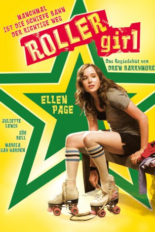

#3837 Roller Girl - Manchmal ist die schiefe Bahn der richtige Weg
Alternativ: Whip It
 
 IMDB-Wertung: 6.9 / 10
IMDB-Wertung: 6.9 / 10  Metascore: 0
Metascore: 0 
Bliss Cavendar ist siebzehn, lebt in einer Kleinstadt in Texas und hat die Nase voll von ihrem provinziellen Dorf: Nichts als Tüllkleider, Hochsteckfrisuren und Schönheitswettbewerbe. Eines Abends fährt sie heimlich nach Austin, um sich ein Rollerderby anzuschauen. Von dem rasanten Sport und den wilden Mädchen im Minirock, punkigen Netzstrümpfen und Rollschuhen ist sie schnell begeistert. Ohne das Wissen ihrer Eltern wird sie schon bald in das Team aufgenommen und zum gefragten 'Roller Girl'. Dabei lernt sie auch den Musiker Oliver kennen – eine Romanze beginnt. Als jedoch kurz vor einem wichtigen Finale ihre größte Rollschuh-Konkurrentin 'Iron Maven' entdeckt, dass Bliss nicht alt genug ist, um ohne Einwilligung ihrer Eltern Derbys zu fahren und Oliver sich plötzlich nicht mehr meldet, beginnen die Probleme und Bliss Traum, auf der Skater-Bahn die Welt zu erobern, scheint zu platzen..
Jahr: 2009
Dauer: 110 Minuten
FSK: 12
Land: USA Studio: Fox Searchlight PicturesTonspuren: DTS - ,
Untertitel: Deutsch,
Auflösung: 1080p (1920x800) Größe: 10024 MB
Genre: Drama, Sport
Regisseur: Drew Barrymore
Drehbuch: Takayuki Hirao
Soundtrack:
Darsteller:
- Sarah Habel als Corbi
- Shannon Eagen als Amber
- Mary Callaghan Lynch als Val
 Ellen Page als Bliss Cavendar
Ellen Page als Bliss Cavendar Jimmy Fallon als 'Hot Tub' Johnny Rocket
Jimmy Fallon als 'Hot Tub' Johnny Rocket Alia Shawkat als Pash
Alia Shawkat als Pash Marcia Gay Harden als Brooke Cavendar
Marcia Gay Harden als Brooke Cavendar- Eulala Scheel als Shania Cavendar
 Daniel Stern als Earl Cavendar
Daniel Stern als Earl Cavendar- Mark Boyd als Ronny
 Carlo Alban als Birdman
Carlo Alban als Birdman- Landon Pigg als Oliver
 Kristen Wiig als Maggie Mayhem
Kristen Wiig als Maggie Mayhem Zoë Bell als Bloody Holly
Zoë Bell als Bloody Holly Eve als Rosa Sparks
Eve als Rosa Sparks Drew Barrymore als Smashley Simpson
Drew Barrymore als Smashley Simpson Andrew Wilson als Razor
Andrew Wilson als Razor Juliette Lewis als Iron Maven
Juliette Lewis als Iron Maven Ari Graynor als Eva Destruction
Ari Graynor als Eva Destruction Danny Mooney als Smashley's Fiancé
Danny Mooney als Smashley's Fiancé- Patrick Moug als Terrifying Cop
- John Lepard als Cop #2
- Austin Bickel als Riley
- Cindy Chu als Derby Hopeful / Hot Tamale , uncredited
- Molly Cunningham als Derby Attendee , uncredited
- Shawntay Dalon als Derby Fan , uncredited
- William C. Fox als Derby Fan , uncredited
- Ed Kelly als Pageant Director , uncredited
 Amanda Lewan als Derby Attendee , uncredited
Amanda Lewan als Derby Attendee , uncredited- Curtis Matzke als Derby Fan , uncredited
- Jeffrey Scott Basham als Derby Fan , uncredited
- Erik A. Williams als Hurl Scouts Fan , uncredited
- Edward Austin Kelly als Pageant Coordinator
- Barbara Coven als Pageant Mother
- Nina Kircher als Trudy
- Douglas Minckiewicz als Colby
- Michael Petrillo als Poindexter
- Sean O'Reilly als Colby's Friend #2
- Sam Zikakis als Colby's Friend #3
- Kent Cummins als Atomic City Clerk #1
- Sarah Yaeger als Atomic City Clerk #2
- Chloe Trueheart als Atomic City Girl #1
- Kyle Kentala als Atomic City Girl #2
- Genevieve Harrison als Atomic City Girl #3
- John Eatherly als Oliver's Bandmate - 'Turbo Fruits'
- Jonas Stein als Oliver's Bandmate - 'Turbo Fruits'
- Max Van Peebles als Oliver's Bandmate - 'Turbo Fruits'
- Rusty Mewha als Holy Rollers Coach
- Will Brick als Referee
- Madge Levinson als Helen
Datei: X:\2009(N-Z)\Roller Girl - Manchmal ist die schiefe Bahn der richtige Weg (2009, FSK12, 1920x800).mkv seit 20.06.2016
Festplatte: HD 2009(G-Z)-2010(A-F)
 Es gibt insgesamt 99 Filme in der Gruppe '2009(N-Z)'
Es gibt insgesamt 99 Filme in der Gruppe '2009(N-Z)'